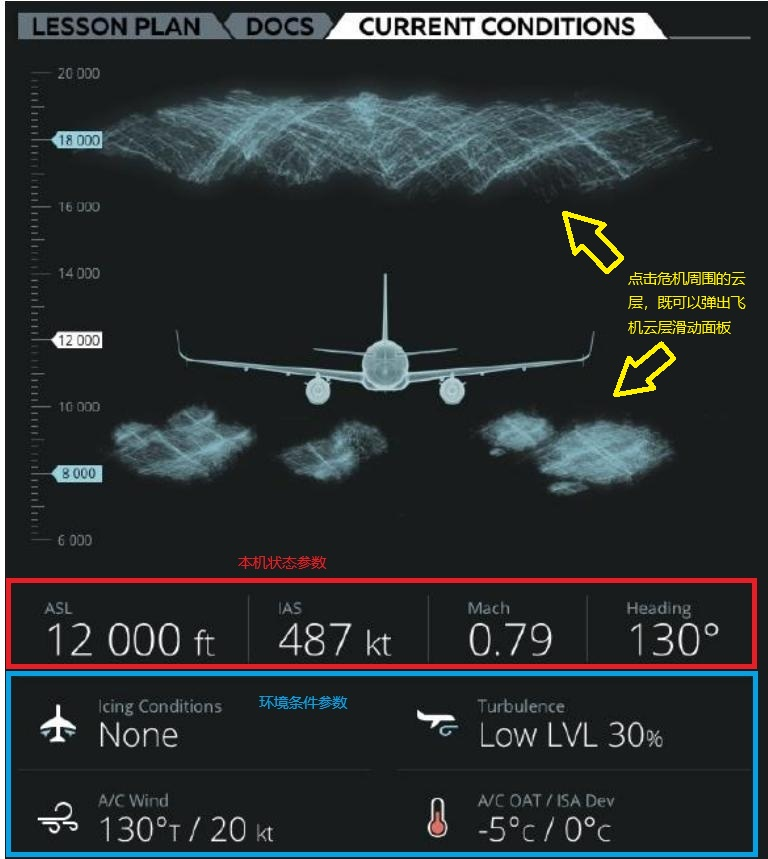
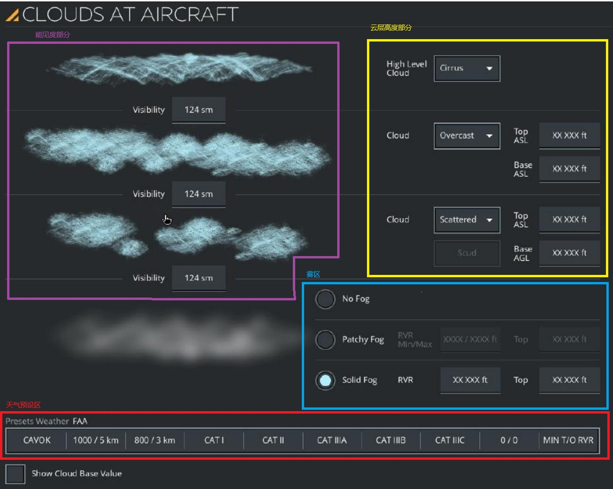
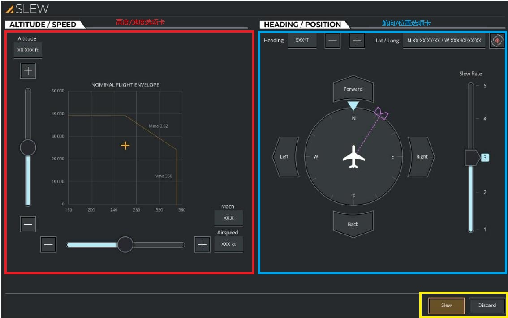
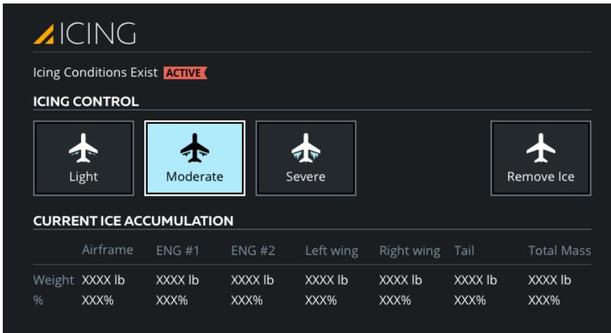
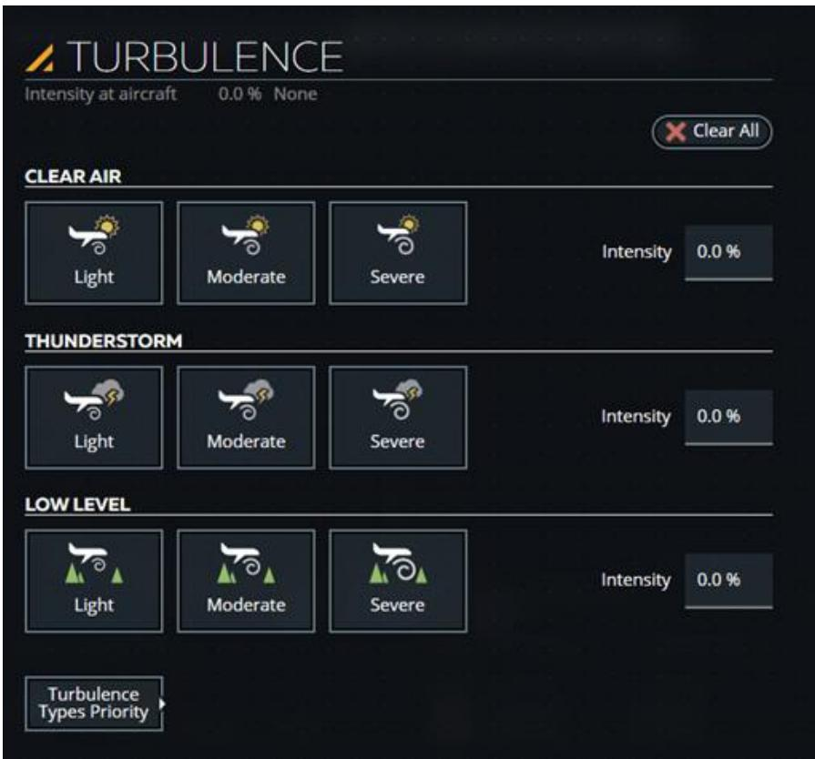
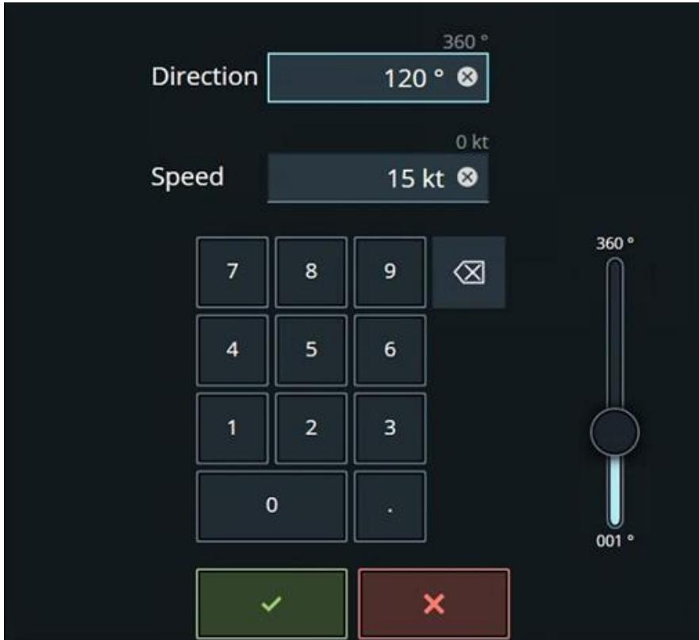
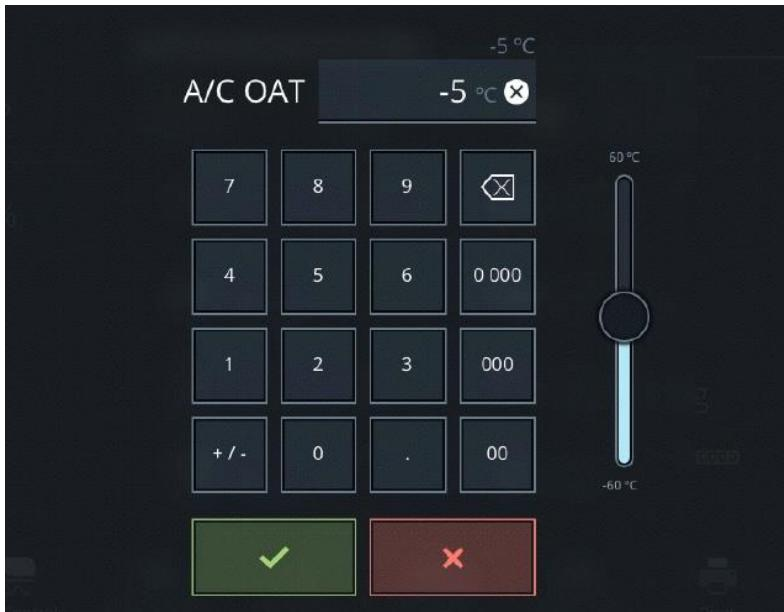
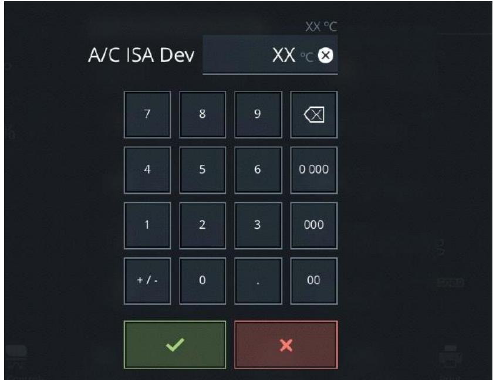

1.2.3 当前条件选项卡 Current Conditions Tab
原始手册对应：## 7. CURRENT CONDITIONS Tab | 整理时间：2026-06-01 | 细化粒度：三级菜单 + 状态流转 + 数据流推导
一、功能层级与界面总览

图 1：当前条件选项卡（CURRENT CONDITIONS Tab）整体界面 — 来自 A320 原始文档
核心定位：当前条件选项卡是教员查看和更改飞机本机状态及所在环境条件的核心入口。涵盖高度、空速、航向、云/雾/能见度、结冰、湍流、风、外界大气温度等全部参数。
1.1 功能层级结构
graph TD
subgraph Main["CURRENT CONDITIONS Tab / 当前条件选项卡"]
B[Aircraft State Parameters
本机状态参数] C[Environmental Conditions
环境条件参数] end B --> B1[ASL / Above Sea Level
海拔高度] B --> B2[IAS / Indicated Airspeed
指示空速] B --> B3[Mach / Mach Speed
马赫数] B --> B4[Heading
航向] C --> C1[Clouds and Visibility
云和能见度] C --> C2[Icing Conditions
结冰条件] C --> C3[Turbulence
湍流] C --> C4[A/C Wind
飞机风向] C --> C5[A/C OAT
外界大气温度] C --> C6[A/C ISA Dev
ISA 偏差] subgraph Popups["点击后弹出 / Pop-up Panels"] D[SLEW Sliding Panel
SLEW 滑动面板] E[CLOUDS AT AIRCRAFT Sliding Panel
飞机处云层滑动面板] F[ICING Sliding Panel
结冰滑动面板] G[TURBULENCE Sliding Panel
湍流滑动面板] H[A/C Wind Keypad
飞机风键盘] I[A/C OAT Keypad
飞机 OAT 键盘] J[A/C ISA Dev Keypad
ISA 偏差键盘] end B1 -.->|点击弹出| D B2 -.->|点击弹出| D B3 -.->|点击弹出| D B4 -.->|点击弹出| D C1 -.->|点击弹出| E C2 -.->|点击弹出| F C3 -.->|点击弹出| G C4 -.->|点击弹出| H C5 -.->|点击弹出| I C6 -.->|点击弹出| J style Main fill:#dbeafe,stroke:#2563eb,stroke-width:2px style Popups fill:#fef3c7,stroke:#d97706,stroke-dasharray: 5 5
本机状态参数] C[Environmental Conditions
环境条件参数] end B --> B1[ASL / Above Sea Level
海拔高度] B --> B2[IAS / Indicated Airspeed
指示空速] B --> B3[Mach / Mach Speed
马赫数] B --> B4[Heading
航向] C --> C1[Clouds and Visibility
云和能见度] C --> C2[Icing Conditions
结冰条件] C --> C3[Turbulence
湍流] C --> C4[A/C Wind
飞机风向] C --> C5[A/C OAT
外界大气温度] C --> C6[A/C ISA Dev
ISA 偏差] subgraph Popups["点击后弹出 / Pop-up Panels"] D[SLEW Sliding Panel
SLEW 滑动面板] E[CLOUDS AT AIRCRAFT Sliding Panel
飞机处云层滑动面板] F[ICING Sliding Panel
结冰滑动面板] G[TURBULENCE Sliding Panel
湍流滑动面板] H[A/C Wind Keypad
飞机风键盘] I[A/C OAT Keypad
飞机 OAT 键盘] J[A/C ISA Dev Keypad
ISA 偏差键盘] end B1 -.->|点击弹出| D B2 -.->|点击弹出| D B3 -.->|点击弹出| D B4 -.->|点击弹出| D C1 -.->|点击弹出| E C2 -.->|点击弹出| F C3 -.->|点击弹出| G C4 -.->|点击弹出| H C5 -.->|点击弹出| I C6 -.->|点击弹出| J style Main fill:#dbeafe,stroke:#2563eb,stroke-width:2px style Popups fill:#fef3c7,stroke:#d97706,stroke-dasharray: 5 5
1.2 界面结构
下方表格中的位置描述基于图 1（CURRENT CONDITIONS Tab 整体界面）实际截图分析得出。
| 区域/控件 | 位置 | 功能说明 | 对应章节 |
|---|---|---|---|
| 参数输入文本字段区 Parameter Input Text Fields | 主区域（整体） | 集中显示所有本机状态参数和环境条件参数，每个字段可点击弹出对应滑动面板或键盘 | 详见 2.1 |
| 云和能见度部分 Clouds and Visibility | 主区域（顶部） | 点击后显示飞机处云层滑动面板，用于修改云层类型、厚度、能见度、雾和天气预设 | 详见 2.2 |
| ASL 海拔高度 Above Sea Level | 主区域 | 显示当前飞机海拔高度，点击后显示 SLEW 滑动面板 | 详见 2.3 |
| IAS 指示空速 Indicated Airspeed | 主区域 | 显示当前指示空速，点击后显示 SLEW 滑动面板 | 详见 2.4 |
| Mach 马赫数 Mach Speed | 主区域 | 显示当前马赫速度，点击后显示 SLEW 滑动面板 | 详见 2.5 |
| Heading 航向 Aircraft Heading | 主区域 | 显示当前飞机航向，点击后显示 SLEW 滑动面板 | 详见 2.6 |
| Icing Conditions 结冰条件 Icing Conditions | 主区域 | 显示当前飞机结冰条件，点击后显示 ICING 滑动面板；也可使用滚轮选择器 | 详见 2.8 |
| Turbulence 湍流 Turbulence | 主区域 | 显示当前湍流状况，点击后显示 TURBULENCE 滑动面板 | 详见 2.9 |
| A/C Wind 飞机风向 A/C Wind | 主区域 | 显示当前飞机处风向风速，点击后显示飞机风键盘 | 详见 2.10 |
| A/C OAT 外界大气温度 A/C OAT | 主区域 | 显示当前飞机处 OAT，点击后显示飞机 OAT 键盘；也可使用滚轮选择器 | 详见 2.11 |
| A/C ISA Dev ISA 偏差 A/C ISA Dev | 主区域 | 显示当前 ISA 偏差，点击后显示 ISA 偏差键盘；也可使用滚轮选择器 | 详见 2.12 |
二、核心功能详解
2.1 参数输入文本字段总览
| 属性 | 说明 |
|---|---|
| 功能定义 | 当前条件选项卡的主交互区域，以输入文本字段形式展示所有可调参数 |
| 交互方式 | 点击字段 → 弹出对应滑动面板或键盘；长按/上下滑动 → 显示滚轮选择器 |
| 滚轮选择器确认 | 绿色勾号确认选择 / 红色 X 取消选择 |
| 状态反馈 | 字段实时显示当前值；修改后若飞行冻结激活，部分参数变更将延迟至冻结解除 |
2.2 云和能见度部分（Clouds and Visibility Section）
| 属性 | 说明 |
|---|---|
| 位置 | CURRENT CONDITIONS Tab 主区域的顶部（占据上半部分的飞机可视化区域） |
| 功能定义 | 以可视化方式显示飞机飞行所在地理区域的当前云层设置（包括云型、云底/云顶高度、能见度等），点击后打开飞机处云层滑动面板 |
| 外观特征 | 界面中央为飞机俯视图，四周渲染有云层效果；该区域无任何文字标签或独立按钮边框，整个可视化区域均可点击 |
| 交互方式 | 点击飞机周围的云层可视化区域 → 弹出 CLOUDS AT AIRCRAFT 滑动面板 |
| 联动 | 云层滑动面板中的设置会同步反映到该区域的云层可视化效果中（如云层厚度、类型变化会实时渲染） |
2.2.1 飞机处云层滑动面板（CLOUDS AT AIRCRAFT Sliding Panel）
| 属性 | 说明 |
|---|---|
| 功能定义 | 允许教员修改本机周围区域的云层和能见度参数 |
| 包含区域 | 能见度部分、云层高度部分、雾区、天气预设区 |
| 控件类型 | 下拉按钮（云层类型）、输入文本字段（上下限）、单选按钮（雾类型）、按钮（天气预设） |

图 5：飞机处云层滑动面板（CLOUDS AT AIRCRAFT Sliding Panel）— 云层类型、厚度、能见度、雾、天气预设
2.2.1.1 能见度部分（Visibility Section）
显示并调整云层之间的能见度。
| 参数项 | 说明 |
|---|---|
| 降雨限制 | 小雨最大 15 nm；中雨最大 5 nm；大雨最大 1 nm |
| 输入范围 | Min = 0，Max = 动态值；也可使用法定英里（sm）显示 |
2.2.1.2 云层高度部分（Cloud Level Section）
| 层级 | 可选类型 | 厚度设置 |
|---|---|---|
| 高云 | 无、卷积云、卷云、卷层云 | — |
| 中云 | 晴朗、疏云、裂云、阴天 | Top ASL / Base ASL（英尺） |
| 低云 | 晴朗、疏云、多云、阴天 | Top ASL / Base AGL（英尺） |
| 厚度说明：最小/最大厚度取决于覆盖类型；输入字段有时定义为 MSL 或 AGL | ||
2.2.1.3 雾区（Fog Section）
| 选项 | 说明 |
|---|---|
| 无雾 | 点击移除雾 |
| 零星雾 | 雾厚度在预设 RVR 最小/最大及零星雾顶部高度之间随机变化 |
| 浓雾 | 雾厚度在给定 RVR 最小/最大之间变化；支持输入浓雾顶部值（英尺） |
| RVR 最小/最大 | 点击输入文本字段输入最小/最大跑道视程（米/英尺）；RVR MIN: 0 ~ RVR MAX；RVR MAX: RVR MIN ~ 3045 米 / 9990 英尺 |
| 互斥关系 | 无雾、零星雾、浓雾三个单选按钮互斥，只能激活其一 |
2.2.1.4 天气预设区（Weather Presets Section）
| 预设按钮 | 说明 |
|---|---|
| CAVOK | 无云底低于 5000 英尺；无积雨云；能见度 ≥ 6 sm/10 km；无降水、雷暴、浅雾或低吹雪 |
| 1000/5km | 激活 1000/5km 条件下的盘旋 |
| 800/2km | 激活 800/2km 条件下的盘旋 |
| CAT I ~ CAT IIIC | 按对应仪表着陆等级激活视觉条件 |
| 0/0 | 激活 0/0 条件 |
| MIN T/O RVR | 激活最小起飞 RVR 条件 |
2.2.1.5 云层设置操作流程（Clouds Setup Flow）
flowchart LR
Start([进入 CLOUDS]) --> Method{设置方式}
Method -->|手动| Manual[调整云层参数]
Method -->|预设| Preset[点击天气预设]
Manual -->|能见度| Vis[输入能见度值]
Manual -->|高云| High[选择卷积云卷云卷层云]
Manual -->|中云| Mid[选择覆盖类型设置厚度]
Manual -->|低云| Low[选择覆盖类型设置厚度]
Manual -->|雾区| Fog[选择雾类型设置RVR]
Preset -->|CAVOK| CAVOK[自动设置CAVOK条件]
Preset -->|CAT等级| CAT[按仪表着陆等级设置]
Preset -->|其他| Other[按预设值设置]
Vis --> Confirm{确认}
High --> Confirm
Mid --> Confirm
Low --> Confirm
Fog --> Confirm
CAVOK --> Confirm
CAT --> Confirm
Other --> Confirm
Confirm -->|确认| Apply[应用设置]
Confirm -->|取消| Cancel[放弃修改]
Apply --> End([完成])
Cancel --> End
style Start fill:#dbeafe,stroke:#2563eb
style End fill:#d1fae5,stroke:#059669
style Preset fill:#fef3c7,stroke:#d97706
2.3 ASL（Above Sea Level / 海拔高度）
| 属性 | 说明 |
|---|---|
| 功能定义 | 显示并允许修改当前飞机海拔高度 |
| 交互方式 | 点击字段 → 弹出 SLEW 滑动面板（ALTITUDE/SPEED 选项卡） |
| 输入范围 | 动态最小/最大值（Dynamic Min/Max） |
| 单位 | 米 / 英尺 |
| 边界条件 | 飞机在地面时，高度位移被禁止 |
2.4 IAS（Indicated Airspeed / 指示空速）
| 属性 | 说明 |
|---|---|
| 功能定义 | 显示并允许修改当前指示空速 |
| 交互方式 | 点击字段 → 弹出 SLEW 滑动面板；或通过空速滑块调整 |
| 单位 | 节（knots） |
| 边界行为 | 飞机将配平至请求速度；襟翼和起落架位置将自动驱动以避免超速；完成后自动设置飞行冻结 |
| 联动 | 修改 IAS 时，Mach 值可能同步变化 |
2.5 Mach（马赫数）
| 属性 | 说明 |
|---|---|
| 功能定义 | 显示并允许修改当前马赫速度 |
| 交互方式 | 点击字段 → 弹出 SLEW 滑动面板中的键盘输入 |
| 边界行为 | 飞机将在请求的马赫速度下进行配平；襟翼和起落架位置自动驱动以避免超速；完成后自动设置飞行冻结 |
2.6 Heading（航向）
| 属性 | 说明 |
|---|---|
| 功能定义 | 显示并允许修改当前飞机航向 |
| 交互方式 | 点击字段 → 弹出 SLEW 滑动面板（HEADING/POSITION 选项卡） |
| 单位 | 磁航向（度） |
| 边界行为 | 仅修改航向，其他参数不受影响 |
2.7 位移滑动面板（SLEW Sliding Panel）
| 属性 | 说明 |
|---|---|
| 触发方式 | 点击主界面 ASL、IAS、Mach 或 Heading 任一参数字段弹出。ASL/IAS/Mach 默认打开 ALTITUDE/SPEED 选项卡；Heading 默认打开 HEADING/POSITION 选项卡 |
| 功能定义 | 允许教员查看和更改飞机的高度、指示空速、航向和位置 |
| 选项卡 | ALTITUDE/SPEED、HEADING/POSITION |
| 边界条件 | 位置冻结激活时可进行位置位移；低于 100 ft AGL 时飞机离地高度保持不变；飞机在地面时高度和速度位移被禁止 |

图 6：飞机位移滑动面板（SLEW Sliding Panel）— 包含 ALTITUDE/SPEED 和 HEADING/POSITION 两个选项卡
2.7.1 ALTITUDE / SPEED 选项卡
| 控件 | 功能说明 |
|---|---|
| Altitude 高度 | 点击输入字段显示键盘；支持高度滑块（上下滑动 +/-）；+/- 按钮以固定速率位移飞机；动态最小/最大值 |
| Airspeed 空速 | 点击输入字段显示键盘；支持空速滑块（左右滑动 +/-）；飞机配平至请求速度；襟翼和起落架自动驱动防超速；完成后自动设置飞行冻结；动态最小/最大值 |
| Mach 马赫 | 点击输入字段显示键盘；飞机配平至请求马赫速度；襟翼和起落架自动驱动防超速；完成后自动设置飞行冻结；动态最小/最大值 |
| Graph 图表 | 交互式图表，触摸并移动 + 符号可同时更新高度和速度参数 |
2.7.2 HEADING / POSITION 选项卡
| 控件 | 功能说明 |
|---|---|
| Heading 航向 | 点击输入字段显示键盘；仅修改航向，不影响其他参数 |
| Heading Slew +/- | 以固定速率增加或减少磁航向；磁航向位移功能不可用时禁用 |
| Forward/Back/Left/Right | 向前/后/左/右位移飞机；加速期间禁用 |
| Lat / Long | 点击输入字段显示键盘，输入新经纬度坐标以重新定位飞机 |
| Hook（可选） | 将飞机定位到地图工作区预设的挂钩地理坐标（无高度） |
| Position Slew Rate Slider | 1~5 档位控制位移速率（Min=1, Max=5） |
| Slew 按钮 | 立即根据新参数位移飞机；无选择更改或位移激活时禁用 |
| Discard 按钮 | 立即取消所选位移参数的更改；无选择更改或位移激活时禁用 |
2.7.3 SLEW 位移操作流程
flowchart LR
Start([打开SLEW面板]) --> Tab{选择选项卡}
Tab -->|ALT_SPEED| Alt[修改高度空速Mach]
Tab -->|HDG_POS| Pos[修改航向位置坐标]
Alt --> Verify1{校验边界}
Pos --> Verify2{校验边界}
Verify1 -->|通过| Exec1[点击Slew执行]
Verify1 -->|不通过| Err1[提示超出范围]
Verify2 -->|通过| Exec2[点击Slew执行]
Verify2 -->|不通过| Err2[提示超出范围]
Exec1 --> Freeze{飞行冻结}
Exec2 --> Freeze
Freeze -->|未激活| Immediate[立即渐变执行]
Freeze -->|激活| Deferred[缓存至冻结解除后执行]
Immediate --> Update[更新飞机参数]
Deferred --> Update
Update --> End([完成])
Err1 --> Alt
Err2 --> Pos
style Start fill:#dbeafe,stroke:#2563eb
style End fill:#d1fae5,stroke:#059669
style Err1 fill:#fee2e2,stroke:#dc2626
style Err2 fill:#fee2e2,stroke:#dc2626
2.8 Icing Conditions（结冰条件）
| 属性 | 说明 |
|---|---|
| 功能定义 | 显示当前飞机结冰条件，允许修改结冰等级 |
| 交互方式 | 点击字段 → 弹出 ICING 滑动面板；或使用滚轮选择器 |
| 状态标志 | 预位黄色标志（已选择但不在云中）/ 激活红色标志（已选择且在云中） |
| 触发条件 | TAT < 6°C 且 TAT > -20°C |
2.8.1 结冰滑动面板（ICING Sliding Panel）
| 属性 | 说明 |
|---|---|
| 功能定义 | 控制飞机上的结冰条件 |
| 互斥关系 | 轻度、中度、重度三个按钮互斥，只能激活其一 |

图 7：结冰滑动面板（ICING Sliding Panel）— 轻度/中度/重度互斥按钮 + 积冰量只读显示
2.8.1.1 结冰条件存在标志
| 标志 | 状态 | 条件 |
|---|---|---|
| 预位黄色 | 已选择结冰条件，飞机未在云中 | TAT < 6°C 且 TAT > -20°C |
| 激活红色 | 已选择结冰条件，飞机在云中 | TAT < 6°C 且 TAT > -20°C |
2.8.1.2 结冰等级控制
| 按钮 | 说明 |
|---|---|
| 轻度（Light） | 积冰速率和量设置为 33% |
| 中度（Moderate） | 积冰速率和量设置为 67% |
| 重度（Severe） | 积冰速率和量设置为重度等级（A320.md 原文未明确标注具体百分比） |
| 除冰（Remove Ice） | 逐渐消除现有积冰，完成后速率和量设为 0 |
2.8.1.3 积冰量部分（ICE ACCUMULATION Section）
只读文本字段，显示各飞机部件的积冰重量和百分比。
| 参数项 | 说明 |
|---|---|
| 显示组件 | 机身、发动机 #1、发动机 #2、左机翼、右机翼、尾翼、总质量 |
| 单位 | 重量：千克/磅；百分比：% |
2.8.1.4 结冰条件状态流转
stateDiagram-v2
[*] --> 未选择 : 默认
未选择 --> 已选择 : 点击轻度/中度/重度按钮
已选择 --> 未选择 : 点击除冰按钮
已选择 --> 预位黄 : TAT满足条件且不在云中
已选择 --> 激活红 : TAT满足条件且在云中
预位黄 --> 激活红 : 飞机进入云中
激活红 --> 预位黄 : 飞机离开云中
预位黄 --> 未选择 : 点击除冰按钮
激活红 --> 未选择 : 点击除冰按钮
2.8.1.5 结冰操作流程（Icing Flow）
flowchart LR
Start([进入 ICING]) --> Select{选择结冰等级}
Select -->|轻度| Light[积冰速率33%]
Select -->|中度| Moderate[积冰速率66%]
Select -->|重度| Severe[积冰速率100%]
Select -->|除冰| Remove[清除积冰]
Light --> Status{判断状态}
Moderate --> Status
Severe --> Status
Status -->|TAT满足且在云中| ActiveR[激活红色标志]
Status -->|TAT满足但不在云中| ArmedY[预位黄色标志]
Status -->|TAT不满足| NoEffect[未生效]
Remove --> End([完成])
ActiveR --> End
ArmedY --> End
NoEffect --> End
style Start fill:#dbeafe,stroke:#2563eb
style End fill:#d1fae5,stroke:#059669
style ActiveR fill:#fee2e2,stroke:#dc2626
style ArmedY fill:#fef3c7,stroke:#d97706
2.9 Turbulence（湍流）
| 属性 | 说明 |
|---|---|
| 功能定义 | 显示并允许修改当前飞机处的湍流状况 |
| 交互方式 | 点击字段 → 弹出 TURBULENCE 滑动面板 |
| 类型 | 晴空湍流、雷暴湍流、低空湍流 |
| 互斥关系 | 三种湍流类型的轻/中/重度按钮各自组内互斥；不同类型可同时激活 |
2.9.1 湍流滑动面板（TURBULENCE Sliding Panel）
| 属性 | 说明 |
|---|---|
| 功能定义 | 选择可在飞机上引发的各种湍流类型和强度 |
| 包含类型 | 晴空湍流（CLEAR AIR）、雷暴湍流（THUNDERSTORM）、低空湍流（LOW LEVEL） |
| 互斥关系 | 每种类型的轻/中/重度按钮组内互斥；不同类型间可同时激活 |

图 8：湍流滑动面板（TURBULENCE Sliding Panel）— 晴空/雷暴/低空三种湍流类型控制
2.9.1.1 晴空湍流（CLEAR AIR Turbulence）
| 属性 | 说明 |
|---|---|
| 适用高度 | 所有高度（地面除外） |
| < 50 ft AGL | 标称强度随 AGL 高度线性减弱 |
| > 50 ft AGL | 100% 标称强度 |
| 交互方式 | 点击轻度/中度/重度按钮之一（组内互斥），将晴空湍流强度设置为对应等级 |
| 轻度（Light） | 点击后强度设置为 33% |
| 中度（Moderate） | 点击后强度设置为 66% |
| 重度（Severe） | 点击后强度设置为 100% |
| Intensity 输入 | 点击输入文本字段显示键盘，允许手动修改强度；Min = 0，Max = 100% |
2.9.1.2 雷暴湍流（THUNDERSTORM Turbulence）
| 属性 | 说明 |
|---|---|
| 适用高度 | 所有高度（地面除外） |
| 衰减特性 | 同晴空湍流（< 50 ft AGL 线性减弱，> 50 ft AGL 100%） |
| 交互方式 | 点击轻度/中度/重度按钮之一（组内互斥），将雷暴湍流强度设置为对应等级 |
| 轻度（Light） | 点击后强度设置为 33% |
| 中度（Moderate） | 点击后强度设置为 66% |
| 重度（Severe） | 点击后强度设置为 100% |
| Intensity 输入 | 点击输入文本字段显示键盘，允许手动修改强度；Min = 0，Max = 100% |
2.9.1.3 低空湍流（LOW LEVEL Turbulence）
| 高度区间 | 强度表现 |
|---|---|
| > 10,000 ft AGL | 无 |
| 5,000 ~ 10,000 ft AGL | 随 AGL 高度线性衰减 |
| 500 ~ 5,000 ft AGL | 100% 标称强度 |
| 50 ~ 500 ft AGL | 随 AGL 高度指数衰减 |
| < 50 ft AGL | 随 AGL 高度线性衰减（地面无） |
| 属性 | 说明 |
|---|---|
| 交互方式 | 点击轻度/中度/重度按钮之一（组内互斥），将低空湍流强度设置为对应等级 |
| 轻度（Light） | 点击后强度设置为 33% |
| 中度（Moderate） | 点击后强度设置为 66% |
| 重度（Severe） | 点击后强度设置为 100% |
| 全部清除（Clear All） | 点击后清除环境中所有活跃的湍流类型 |
| 湍流类型优先级 | 点击可展开按钮显示湍流类型优先级滑动面板 |
2.9.1.4 湍流操作流程（Turbulence Flow）
flowchart LR
Start([进入 TURBULENCE]) --> SelectType{选择湍流类型}
SelectType -->|晴空| CAT[设置CLEAR AIR强度]
SelectType -->|雷暴| TST[设置THUNDERSTORM强度]
SelectType -->|低空| LLT[设置LOW LEVEL强度]
SelectType -->|清除全部| Clear[清除所有湍流]
CAT --> Intensity1[选择轻中重度]
TST --> Intensity2[选择轻中重度]
LLT --> Intensity3[选择轻中重度]
Intensity1 --> End([完成])
Intensity2 --> End
Intensity3 --> End
Clear --> End
style Start fill:#dbeafe,stroke:#2563eb
style End fill:#d1fae5,stroke:#059669
2.10 A/C Wind（飞机风向风速）
| 属性 | 说明 |
|---|---|
| 功能定义 | 主界面字段，显示当前飞机位置的风向和风速 |
| 交互方式 | 点击字段 → 弹出飞机风键盘（详见 2.10.1）；或使用滑块控件 |
2.10.1 飞机风键盘（A/C Wind Keypad）
触发方式：点击主界面"A/C Wind"参数字段弹出。功能定义：显示当前飞机位置的风向和风速，并支持修改。
| 属性 | 说明 |
|---|---|
| 输入方式 | 键盘输入或滑块控件 |
| 边界行为 | 飞行冻结未激活时立即以预定速率渐变至请求值；飞行冻结激活时延迟至冻结解除 |
参数设置项
| 参数项 | 说明 |
|---|---|
| 风向范围 | 1° ~ 360° |
| 确认/取消 | 绿色勾号确认 / 红色 X 取消 |

图 9：飞机风键盘（A/C Wind Keypad）— 显示当前风向风速并支持键盘/滑块输入
2.11 A/C OAT（外界大气温度）
| 属性 | 说明 |
|---|---|
| 功能定义 | 主界面字段，显示当前飞机位置的外界大气温度 |
| 交互方式 | 点击字段 → 弹出飞机 OAT 键盘（详见 2.11.1）；或使用滑块/滚轮选择器 |
2.11.1 飞机 OAT 键盘（A/C OAT Keypad）
触发方式：点击主界面"A/C OAT"参数字段弹出；或通过滚轮选择器触发。功能定义：显示当前飞机位置的外界大气温度，并支持修改。
| 属性 | 说明 |
|---|---|
| 输入方式 | 键盘输入或滑块控件 |
| 边界行为 | 飞机在地面时立即生效；在空中且飞行冻结未激活时渐变；在空中且飞行冻结激活时延迟至解除 |
| 状态反馈 | 更改过程中 IOS 警告页脚显示"温度正在变化"；达到新值前 OAT 读数逐渐变化 |
参数设置项
| 参数项 | 说明 |
|---|---|
| 确认/取消 | 绿色勾号确认 / 红色 X 取消 |
| 联动 | 整个温度剖面根据 OAT 变化偏移（动态最小/最大值） |

图 10：飞机 OAT 键盘（A/C OAT Keypad）— 显示当前外界大气温度并支持键盘/滑块输入
2.12 A/C ISA Dev（ISA 偏差）
| 属性 | 说明 |
|---|---|
| 功能定义 | 主界面字段，显示当前飞机位置的 ISA 温度偏差 |
| 交互方式 | 点击字段 → 弹出 ISA 偏差键盘（详见 2.12.1）；或使用滚轮选择器 |
2.12.1 飞机 ISA 偏差键盘（A/C ISA Dev Keypad）
触发方式：点击主界面"A/C ISA Dev"参数字段弹出；或通过滚轮选择器触发。功能定义：显示当前飞机位置的 ISA 温度偏差，并支持修改。
| 属性 | 说明 |
|---|---|
| 输入方式 | 键盘输入 |
| 边界行为 | 飞机在地面时立即生效；在空中且飞行冻结未激活时渐变；在空中且飞行冻结激活时延迟至解除 |
参数设置项
| 参数项 | 说明 |
|---|---|
| 确认/取消 | 绿色勾号确认 / 红色 X 取消 |
| 联动 | 整个温度剖面将根据 ISA 偏差的变化进行偏移 |

图 11：飞机 ISA 偏差键盘（A/C ISA Dev Keypad）— 显示当前 ISA 温度偏差
三、全局操作流程与推导
3.1 当前条件选项卡中教员核心操作流程
下图汇总了 Chapter 1 全部子章节（2.1~2.12）的核心操作流程，形成从主界面入口到最终应用生效的完整闭环。教员可从任意入口进入对应模块；每个模块内部的关键决策与操作步骤均在对应纵向 subgraph 中展开。如需查看各面板内部更详细的字段属性与边界行为，请参见对应子章节的横向流程图（2.2.1.5、2.7.3、2.8.1.5、2.9.1.4）。
flowchart LR
Start([打开 CURRENT CONDITIONS]) --> View[查看当前参数]
View --> Select{选择修改项}
Select -->|本机状态| State[点击 ASL/IAS/Mach/Heading]
Select -->|环境条件| Env[点击 云/结冰/湍流/风/OAT/ISA]
State --> SLEW[SLEW 滑动面板]
Env --> Panel{选择面板类型}
Panel -->|云| Clouds[CLOUDS 滑动面板]
Panel -->|结冰| Icing[ICING 滑动面板]
Panel -->|湍流| Turb[TURBULENCE 滑动面板]
Panel -->|风温偏差| Keypad[键盘输入]
subgraph SLEW_SUB [SLEW 内部流程]
direction TB
SLEW_TAB{选择选项卡}
SLEW_TAB -->|ALT_SPEED| SLEW_A[修改高度空速Mach]
SLEW_TAB -->|HDG_POS| SLEW_H[修改航向位置坐标]
SLEW_A --> SLEW_V{校验边界}
SLEW_H --> SLEW_V
SLEW_V -->|通过| SLEW_OK[点击Slew执行]
SLEW_V -->|不通过| SLEW_ERR[提示超出范围]
SLEW_OK --> SLEW_FRZ{飞行冻结}
SLEW_FRZ -->|未激活| SLEW_IMM[立即渐变执行]
SLEW_FRZ -->|激活| SLEW_DEF[缓存至冻结解除后执行]
end
subgraph KEYPAD_SUB [键盘内部流程]
direction TB
KEY_IN[输入新值] --> KEY_CON{确认}
KEY_CON -->|绿色勾号| KEY_APP[应用修改]
KEY_CON -->|红色X| KEY_CAN[取消修改]
KEY_APP --> KEY_FRZ{飞行冻结}
KEY_FRZ -->|未激活| KEY_IMM[立即渐变执行]
KEY_FRZ -->|激活| KEY_DEF[缓存至冻结解除后执行]
end
SLEW --> SLEW_SUB
Clouds --> CloudsApply[手动设置或天气预设]
Icing --> IcingApply[点击等级按钮直接生效]
Turb --> TurbApply[点击类型与强度直接生效]
Keypad --> KEYPAD_SUB
SLEW_IMM --> Apply[应用设置]
SLEW_DEF --> Apply
SLEW_ERR --> View
CloudsApply --> Apply
IcingApply --> Apply
TurbApply --> Apply
KEY_IMM --> Apply
KEY_DEF --> Apply
KEY_CAN --> View
Apply --> End([参数更新完成])
style Start fill:#dbeafe,stroke:#2563eb
style End fill:#d1fae5,stroke:#059669
3.2 参数修改通用状态机
stateDiagram-v2
[*] --> 空闲状态
空闲状态 --> 面板打开中 : 点击参数字段
面板打开中 --> 空闲状态 : 点击取消/关闭
面板打开中 --> 值已修改 : 输入新值
值已修改 --> 参数生效中 : 点击确认或Slew
参数生效中 --> 生效完成 : 冻结未激活时立即生效
参数生效中 --> 生效完成 : 冻结激活时延迟至解除
生效完成 --> [*]
值已修改 --> 空闲状态 : 点击取消或Discard
3.3 关联依赖与异常边界
3.3.1 关联依赖
| 功能点 | 依赖项 | 说明 |
|---|---|---|
| ASL/IAS/Mach/Heading 修改 | SLEW 滑动面板 | 点击字段后必须正确弹出 SLEW 面板 |
| 高度/速度位移 | 飞机状态 | 飞机在地面时高度和速度位移被禁止 |
| 位置位移 | 位置冻结 | 位置冻结激活时才能进行位置位移；低于 100 ft AGL 时保持离地高度 |
| OAT/风/ISA 修改 | 飞行冻结状态 | 冻结未激活时立即渐变；冻结激活时延迟至解除 |
| 结冰条件 | TAT 温度 | 需满足 TAT < 6°C 且 TAT > -20°C 才能激活 |
| 能见度 | 降雨状态 | 降雨激活时最大能见度受限（小雨 15nm / 中雨 5nm / 大雨 1nm） |
| 天气预设 | 标准体系 | CAVOK/CAT I~III 等预设按 FAA/EASA/TCA/EUR 标准执行 |
3.3.2 异常边界
| 场景 | 预期行为 |
|---|---|
| 飞机在地面时尝试高度/速度位移 | SLEW 面板中对应控件禁用或操作无效 |
| 飞行冻结激活时修改 OAT/风/ISA | 变更延迟至飞行冻结解除后执行 |
| TAT 不在结冰温度范围内 | 结冰条件标志显示预位（黄色），但不会激活（红色） |
| 降雨激活时能见度超出限制 | 系统自动限制最大能见度为对应降雨等级的上限 |
| Slew 参数未选择或位移进行中 | Slew 按钮和 Discard 按钮禁用 |
| 加速期间（Speed Up） | SLEW 面板的 Forward/Back/Left/Right 按钮禁用 |
| 输入值超出动态最小/最大范围 | 系统拒绝输入并提示有效范围 |
| 磁航向位移功能不可用 | Heading Slew +/- 按钮禁用 |
3.4 数据流与开发流程推导
3.4.1 数据流（参数修改与生效）
教员点击参数输入文本字段
↓
IOS 弹出对应滑动面板 / 键盘
↓
教员输入新值或选择新状态
↓
点击确认（绿色勾号）或 Slew 按钮
↓
前端校验输入值范围（Dynamic Min/Max）
↓
校验通过 → 发送参数变更指令至模拟器核心
↓
模拟器核心判断飞行冻结状态
├─ 冻结未激活 → 立即执行参数渐变
└─ 冻结激活 → 缓存变更，冻结解除后执行
↓
模拟器反馈当前参数值至 IOS 显示
↓
IOS 更新对应文本字段和状态标志3.4.2 API 接口契约建议
| 接口 | 方法 | 请求字段 | 响应字段 |
|---|---|---|---|
getCurrentConditions | GET | - | asl, ias, mach, heading, icing, turbulence, windDirection, windSpeed, oat, isaDev, clouds, visibility |
updateAircraftSlew | POST | altitude, airspeed, mach, heading, lat, long, slewRate | status, estimatedTime, currentValues |
setCloudsAtAircraft | POST | cloudLevels[], visibility, fogType, fogRvrMin, fogRvrMax, weatherPreset | status, updatedFields |
setIcingConditions | POST | icingLevel | status, armedFlag, activeFlag, accumulationData |
setTurbulence | POST | clearAir, thunderstorm, lowLevel | status, activeTypes[] |
setACWind | POST | direction, speed | status, rampingState |
setACOAT | POST | temperature | status, rampingState, advisoryMessage |
setACISADev | POST | isaDeviation | status |
四、测试要点
| 测试类型 | 测试场景 |
|---|---|
| 正向路径 | 打开 CURRENT CONDITIONS Tab → 各参数字段正确显示当前值 |
| 正向路径 | 点击 ASL 字段 → SLEW 面板弹出 → 输入新高度 → Slew 执行 → 高度正确更新 |
| 正向路径 | 点击 Icing 字段 → ICING 面板弹出 → 选择轻度结冰 → 预位标志变黄 |
| 正向路径 | 点击云层部分 → CLOUDS 面板弹出 → 选择天气预设 CAT I → 能见度/云底高自动设置 |
| 正向路径 | 使用滚轮选择器修改 OAT → 绿色勾号确认 → 值正确更新 |
| 异常路径 | 飞机在地面时确认高度/速度位移控件被禁用 |
| 异常路径 | 飞行冻结激活时修改风/OAT → 确认变更延迟至冻结解除 |
| 异常路径 | TAT 不在结冰范围内时确认结冰标志保持预位（黄色）不激活（红色） |
| 异常路径 | 未选择 Slew 参数时确认 Slew/Discard 按钮禁用 |
| 边界条件 | 能见度输入超出降雨限制时确认系统自动截断至上限 |
| 边界条件 | 输入高度/空速超出动态 Min/Max 时确认系统拒绝并提示范围 |
| 联动测试 | 修改 GW 关联参数时确认 ZFW/Fuel 等联动参数自动调整 |
| 性能测试 | 快速连续修改多个参数时确认界面响应无延迟、无状态冲突 |
五、变更记录
| 日期 | 版本 | 变更内容 |
|---|---|---|
| 2026-06-01 | V0.1 | 完成当前条件选项卡的细化整理，包含功能总览、11项参数字段详解、4个滑动面板详解、3个键盘详解、状态机、数据流推导、API建议、测试要点 |